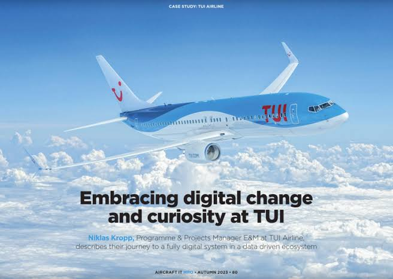

Signature Business Impact
Selected initiatives demonstrating strategic leadership, operational excellence, and measurable outcomes.
Fraud Investigation & Risk Management
Western Union / Teleperformance
Managed fraud detection, investigation, and prevention activities across financial transactions and digital channels throughout Europe, the Middle East, and Gulf markets, ensuring compliance with regulatory and organizational requirements.

Operations Leadership & Service Delivery
TUI UK | Teleperformance
Led a team of 22 advisors responsible for pre-travel operations, customer support, and service delivery, ensuring operational performance, regulatory compliance, and exceptional customer experiences across the pre-departure journey
 ▶
Watch on YouTube
▶
Watch on YouTube
Post-Production Project Management
Media Gate
Managed end-to-end post-production workflows, defining project scope, budgeting, and timelines.

Global Marketing Strategy & Market Expansion
DeTi ART UAB
Led global marketing initiatives designed to strengthen brand positioning, expand international market presence, and support organizational growth across multiple European markets.
Radio Project Launch & Operational Units
Melody FM 91.1 & Zain FM 102.1
Oversaw the launch and establishment of new operational units for two major radio stations.
Broadcast Operations & Organizational Establishment
Nogoum FM 100.6 NRP
Orchestrated the strategic development and operational establishment of a major media organization from the ground up.